Capsule Collision Detection
Capsule shapes are useful tools for handling simple game physics. Here you will find out why and how to detect and handle collisions between capsule and triangle mesh, as well as with other capsules, without using a physics engine.
(Note on not using a physics engine: There is reason for doing this without physics engine, even if you have a physics engine up and running within your game engine. Physics engine is probably configured for physically correct behaviour which is not necessarily the most gameplay friendly. It also comes with a lot of parameters and lot of overhead, such as the need to set up and manage a physics collision world, probably separately from your own entity system. Also, it is fun to learn how these things work.)
Capsules are often a better choice to represent game entities than spheres or boxes. Think about a human player character for example:
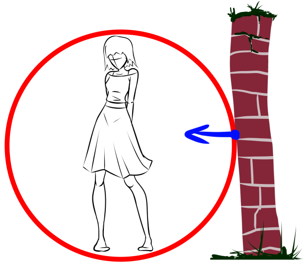
As you can see, the sphere collision shape will not let the player close to walls if it is large enough to contain the player. But it might work well for other types of more rounded characters. For example imagine this type of roundish entity:
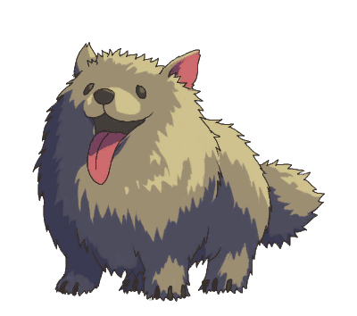
And now more seriously, take a look at the bounding box collision:
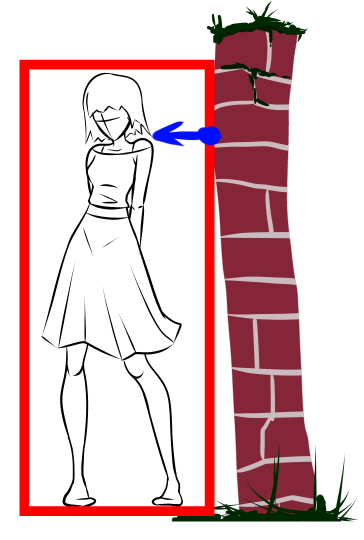
The box shape has another problem, that it is not rounded, so it will not be able to traverse stairs, and can be jerky when sliding along walls (shown later). These will lead to weird or unsatisfying gameplay experience.
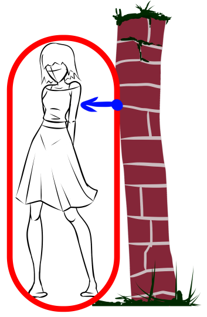
A capsule shape will provide a result that match player expectation more closely. From programming standpoint, it will also be more complicated to implement, but not by much. The implementation is just an extension to sphere collision detection, so let’s start with that.
Sphere – Sphere collision
This is quite simple, we take the distance between the two sphere centres, and if it is less than the added radius of both, they are intersecting. We are also interested in the penetration depth and normal vector to handle game physics such as sliding on top of surfaces/walls (shown later).
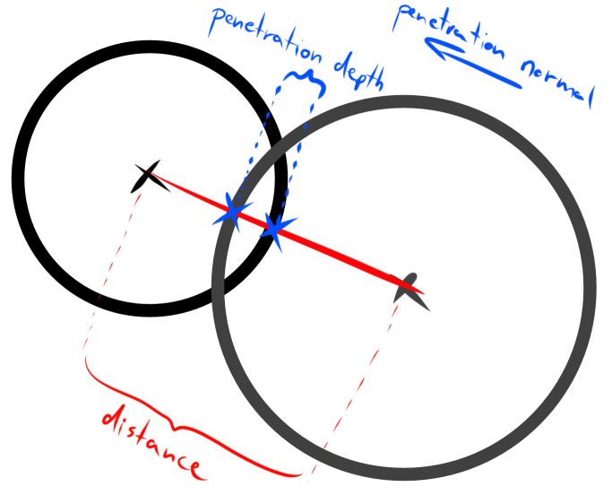
Sphere – Triangle collision
This is probably the most complicated part and we should break it down. First, we determine the triangle’s plane from its corner points and see whether the sphere intersects the plane (if not, we do not continue). This is done by taking the distance between the plane and sphere centre. I tried to make the following sample codes to resemble HLSL code, but look at it like pseudo-code:
float3 p0, p1, p2; // triangle corners
float3 center; // sphere center
float3 N = normalize(cross(p1 - p0, p2 - p0)); // plane normal
float dist = dot(center - p0, N); // signed distance between sphere and plane
if(!mesh.is_double_sided() && dist > 0)
continue; // can pass through back side of triangle (optional)
if(dist < -radius || dist > radius)
continue; // no intersectionIf the code is still running, that means the sphere is intersecting the infinite plane of the triangle. Next, we determine if there is any point inside the triangle that is inside the sphere or not. There are two cases. The first case is that if the sphere centre projected to the plane is inside the triangle perimeter, then the sphere is intersecting the triangle:
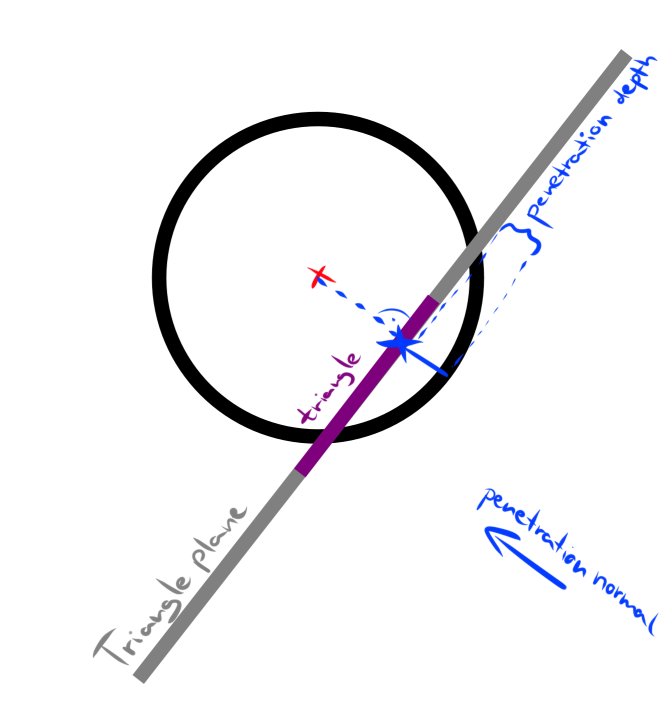
float3 point0 = center - N * dist; // projected sphere center on triangle plane
// Now determine whether point0 is inside all triangle edges:
float3 c0 = cross(point0 - p0, p1 - p0)
float3 c1 = cross(point0 - p1, p2 - p1)
float3 c2 = cross(point0 - p2, p0 - p2)
bool inside = dot(c0, N) <= 0 && dot(c1, N) <= 0 && dot(c2, N) <= 0;If inside is true, then we can just take the point0 (projected sphere centre as the closest point on the triangle to the sphere. Otherwise, we are not sure we are intersecting with the triangle, so find the closest point to the sphere centre on all three edges, choose the closest of the three and determine if it is within the sphere radius. So for all three edge line segments, we will determine the closest point to the sphere centre and take the closest one:
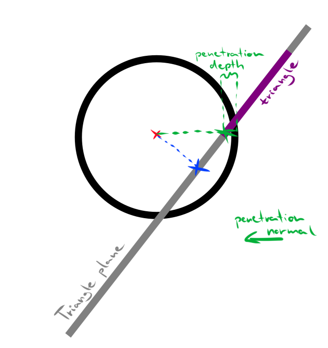
float3 ClosestPointOnLineSegment(float3 A, float3 B, float3 Point)
{
float3 AB = B - A;
float t = dot(Point - A, AB) / dot(AB, AB);
return A + saturate(t) * AB; // saturate(t) can be written as: min((max(t, 0), 1)
}
float radiussq = radius * radius; // sphere radius squared
// Edge 1:
float3 point1 = ClosestPointOnLineSegment(p0, p1, center);
float3 v1 = center - point1;
float distsq1 = dot(v1, v1);
bool intersects = distsq1 < radiussq;
// Edge 2:
float3 point2 = ClosestPointOnLineSegment(p1, p2, center);
float3 v2 = center - point2;
float distsq2 = dot(vec2, vec2);
intersects |= distsq2 < radiussq;
// Edge 3:
float3 point3 = ClosestPointOnLineSegment(p2, p0, center);
float3 v3 = center - point3;
float distsq3 = dot(v3, v3);
intersects |= distsq3 < radiussq;At the end of this, we will know whether we intersect with the triangle or not. If we intersect, we must compute the penetration depth and normal so that we will be able to properly handle the collision (bounce back or slide on surface). Like I said, we need to determine the closest intersection point for this. It is either inside the triangle, or on one of the edges:
if(inside || intersects)
{
float3 best_point = point0;
float3 intersection_vec;
if(inside)
{
intersection_vec = center - point0;
}
else
{
float3 d = center - point1;
float best_distsq = dot(d, d);
best_point = point1;
intersection_vec = d;
d = center - point2;
float distsq = dot(d, d);
if(distsq < best_distsq)
{
distsq = best_distsq;
best_point = point2;
intersection_vec = d;
}
d = center - point3;
float distsq = dot(d, d);
if(distsq < best_distsq)
{
distsq = best_distsq;
best_point = point3;
intersection_vec = d;
}
}
float3 len = length(intersection_vec); // vector3 length calculation:
sqrt(dot(v, v))
float3 penetration_normal = intersection_vec / len; // normalize
float penetration_depth = radius - len; // radius = sphere radius
return true; // intersection success
}That’s it for the sphere – triangle intersection!
Capsule collision
The capsule collision is a simple extension to the sphere intersection test. I define the capsule with two points, base and tip, and the radius:
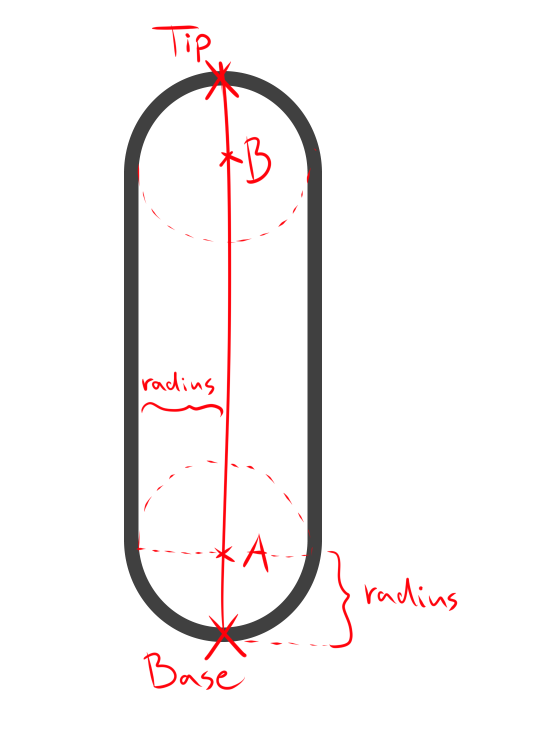
The main idea with the implementation, is that we want to do a sphere intersection test by selecting the most relevant sphere along the capsule axis, clamped to the A-B line segment. Let’s see it in action in the following cases:
Capsule – Capsule collision
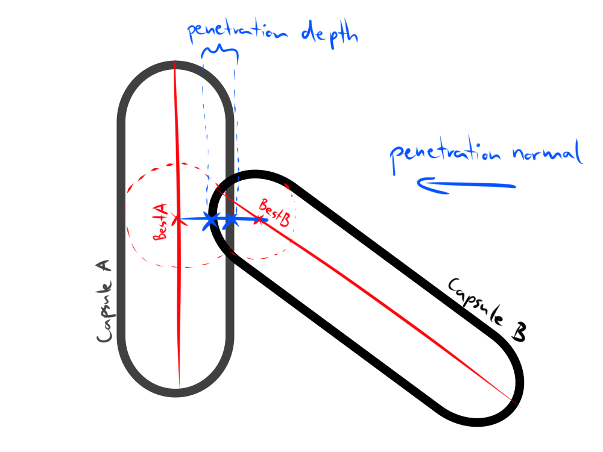
As you can see, the intersection test is at the end performed against two spheres. To select the most relevant spheres, the previously defined ClosestPointOnLineSegment() function will come in handy. We will compute the A and B line endpoints on both capsules, then take vectors and distances between all endpoints between the two capsules, to finally compute the closest points between two lines:
// capsule A:
float3 a_Normal = normalize(a.tip - a.base);
float3 a_LineEndOffset = a_Normal * a.radius;
float3 a_A = a.base + a_LineEndOffset;
float3 a_B = a.tip - a_LineEndOffset;
// capsule B:
float3 b_Normal = normalize(b.tip - b.base);
float3 b_LineEndOffset = b_Normal * b.radius;
float3 b_A = b.base + b_LineEndOffset;
float3 b_B = b.tip - b_LineEndOffset;
// vectors between line endpoints:
float3 v0 = b_A - a_A;
float3 v1 = b_B - a_A;
float3 v2 = b_A - a_B;
float3 v3 = b_B - a_B;
// squared distances:
float d0 = dot(v0, v0);
float d1 = dot(v1, v1);
float d2 = dot(v2, v2);
float d3 = dot(v3, v3);
// select best potential endpoint on capsule A:
float3 bestA;
if (d2 < d0 || d2 < d1 || d3 < d0 || d3 < d1)
{
bestA = a_B;
}
else
{
bestA = a_A;
}
// select point on capsule B line segment nearest to best potential endpoint on A capsule:
float3 bestB = ClosestPointOnLineSegment(b_A, b_B, bestA);
// now do the same for capsule A segment:
bestA = ClosestPointOnLineSegment(a_A, a_B, bestB);We selected the two best possible candidates on both capsule axes. What remains is to place spheres on those points and perform the sphere intersection routine:
float3 penetration_normal = bestA - bestB;
float len = length(penetration_normal);
penetration_normal /= len; // normalize
float penetration_depth = a.radius + b.radius - len;
bool intersects = penetration_depth > 0;Done, we can now detect collision between two capsules.
Capsule – Triangle collision
The principle is very similar to the previous example, we select the closest point on the capsule line to the triangle, place a sphere on that point and then perform the sphere – triangle test. We can find the closest point on a line to triangle with ray tracing. First we trace the plane with the capsule line (ray). Then we determine the closest point on the triangle to the trace point. The reference point is the closest point on the capsule line to that. We will place the sphere on the reference point and do a normal triangle – sphere intersection test as usual.
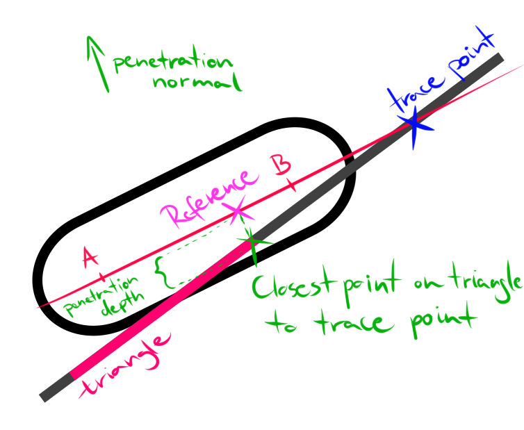
It seems that this image has a mistake: the segment marked with “penetration depth”, is really (radius – penetrationdepth)
// Compute capsule line endpoints A, B like before in capsule-capsule case:
float3 CapsuleNormal = normalize(tip - base);
float3 LineEndOffset = CapsuleNormal * radius;
float3 A = base + LineEndOffset;
float3 B = tip - LineEndOffset;
// Then for each triangle, ray-plane intersection:
// N is the triangle plane normal (it was computed in sphere - triangle intersection case)
float t = dot(N, (p0 - base) / abs(dot(N, CapsuleNormal)));
float3 line_plane_intersection = base + CapsuleNormal * t;
float3 reference_point = {find closest point on triangle to line_plane_intersection};
// The center of the best sphere candidate:
float3 center = ClosestPointOnLineSegment(A, B, reference_point);The “find closest point on triangle to line_plane_intersection” refers to the same approach that was used in the sphere – triangle intersection case, when we try to determine if the sphere centre projection is inside the triangle, or find a closest edge point. Here, instead of the sphere centre projection, we use the line_plane_intersection point:
// Determine whether line_plane_intersection is inside all triangle edges:
float3 c0 = cross(line_plane_intersection - p0, p1 - p0)
float3 c1 = cross(line_plane_intersection - p1, p2 - p1)
float3 c2 = cross(line_plane_intersection - p2, p0 - p2)
bool inside = dot(c0, N) <= 0 && dot(c1, N) <= 0 && dot(c2, N) <= 0;
if(inside)
{
reference_point = line_plane_intersection;
}
else
{
// Edge 1:
float3 point1 = ClosestPointOnLineSegment(p0, p1, line_plane_intersection);
float3 v1 = line_plane_intersection - point1;
float distsq = dot(v1, v1);
float best_dist = distsq;
reference_point = point1;
// Edge 2:
float3 point2 = ClosestPointOnLineSegment(p1, p2, line_plane_intersection);
float3 v2 = line_plane_intersection - point2;
distsq = dot(vec2, vec2);
if(distsq < best_dist)
{
reference_point = point2;
best_dist = distsq;
}
// Edge 3:
float3 point3 = ClosestPointOnLineSegment(p2, p0, line_plane_intersection);
float3 v3 = line_plane_intersection - point3;
distsq = dot(v3, v3);
if(distsq < best_dist)
{
reference_point = point3;
best_dist = distsq;
}
}After this (that you placed the sphere onto the reference point), just finish it off with the sphere – triangle intersection, and you are done.
There is a corner case with this. When the capsule line is parallel to the triangle plane, the ray – plane trace will fail. You can detect this case by checking the dot product between the ray direction (CapsuleNormal) and triangle normal (N). If it’s zero, then they are parallel. When this happens, instead of relying on the tracing, a simple fix is to just take an arbitrary point (for example the first corner) from the triangle and use that as reference point. The reference point will be used the same way as the intersection point, to determine the closest point on the capsule A-B segment.
Usage
Now that you have capsule collision, you will want to use the results. You will obviously know when two primitives intersect now, but you also get the penetration normal and depth. You can use these for character sliding on surfaces.
If the capsule collides with a surface, then modify the velocity so that it will be absorbed in the direction of the impact and instead slide parallel to the surface:
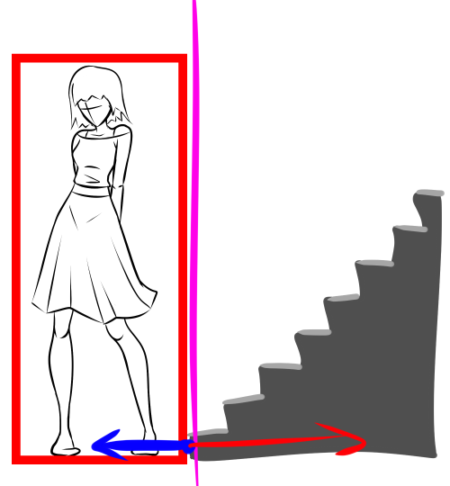
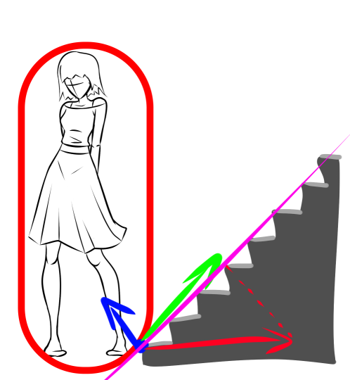
collisionobject, normal, depth = SceneIntersectCapsule(capsule);
if(collisionobject)
{
// Modify player velocity to slide on contact surface:
float3 velocity_length = length(velocity);
float3 velocity_normalized = velocity / velocity_length;
float3 undesired_motion = normal * dot(velocity_normalized, normal);
float3 desired_motion = velocity_normalized - undesired_motion;
velocity = desired_motion * velocity_length;
// Remove penetration (penetration epsilon added to handle infinitely small penetration):
capsule.Translate(normal * (depth + 0.0001f));
}The player sliding on the contact surface is a very nice and expected experience for the player. It handles collision with the wall as well as with the floor. It will automatically handle moving a slope or stairs as well, however, if there is gravity, the player will be constantly sliding down slopes and small stairs. The gravity also makes it difficult to climb the slopes and stairs, which is not very desirable. In my experience, it is best to perform the collision detection twice, once for the player motion forces, and once with only the gravity force, but in the gravity collision phase, don’t do the sliding along surface if the surface is not sloped enough. You can check how much it is sloped by comparing the dot product of the penetration normal and the “up” vector:
if(dot(normal, float3(0, 1, 0)) > 0.3f)
{
ground_intersection = true;
gravity_force = 0;
}Discrete collision detection
This kind of collision detection can detect when a stationary capsule intersect with an other one or a triangle, but if the capsule is moving very fast, it can miss objects in between two game update ticks. This phenomenon is called the bullet through paper problem. To avoid this, we must do continuous collision detection. A very simple solution for this is just to do multiple steps of collision detection during one game frame. For example, let’s say that we want to divide the game frame into 5 collision sub-steps:
int ccd_max = 5;
for(int ccd = 0; ccd < ccd_max; ++ccd)
{
float step = velocity / ccd_max;
capsule.Translate(step);
collisionobject, normal, depth = SceneIntersectCapsule(capsule);
// ...
}The more sub-steps we do, the more accurate the result will be, as well as more expensive.
As a bonus, an idea worth to try in the future is to apply one capsule collision detection step for moving spheres instead of multiple step based continuous collision detection phases. For example to implement geometry collision for a particle system.
Optimization
Some simple optimizations here can get us a long way. The most obvious one is to perform AABB (axis aligned bounding box) checks before you do a capsule collision test. AABB for a capsule is very easily generated, for example generate two AABBs for the two opposite spheres, and merge the resulting AABBs. Only check collisions between objects whose AABBs are overlapping the capsule. I also got a very prominent speed up by doing the AABB check between capsule AABB and triangle AABB. This was also very important for a large terrain mesh. In continuous collision detection fashion, you can also create a large AABB encompassing the starting and ending capsule positions (according to velocity) for all the CCD steps, so the sub-steps will only check a subset of potential collider objects.
It would be also preferable to use a BVH (bounding volume hierarchy, hierarchical bounding box acceleration structure) to reduce the number of comparisons for detecting overlapping objects/triangles.
An other thing that you probably want to return early as possible when doing the continuous collision detection sub-steps. So don’t search for the closest intersection, but return immediately if you find one. Let the gameplay code adjust position/velocity and continue with the next sub-step. It might be the case that no further collision occurs after it anyway. At least in my experience, this approach posed no visible problems.
I based the sphere collision detection approach on how the DirectXMath library does it, but modified in some places to work better for my case.
I hope you found it useful. If you notice any mistakes or have any ideas to make it better, hit the comment section below.